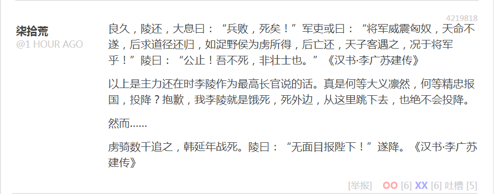
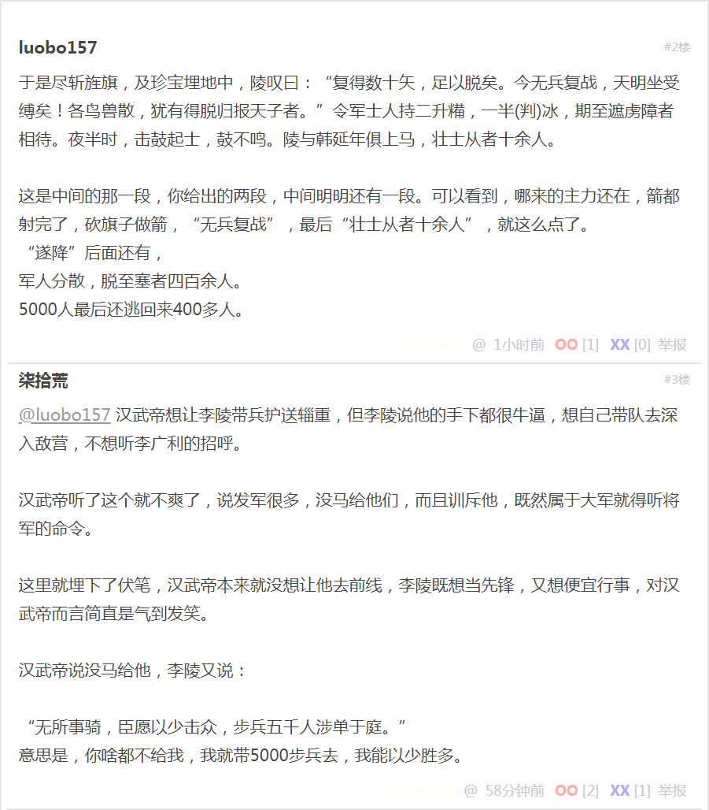
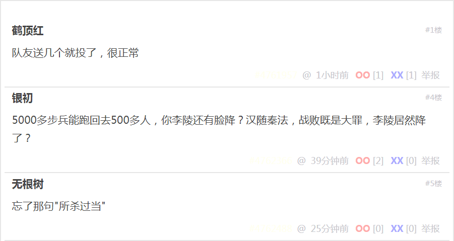
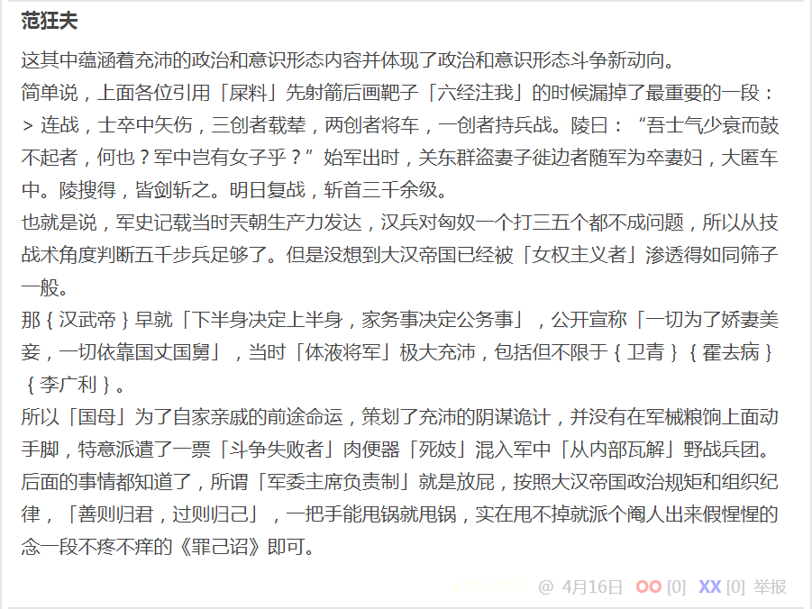

段子 42198118
良久，陵还，大息曰：“兵败，死矣！”军吏或曰：“将军威震匈奴，天命不遂，后求道径还归，如浞野侯为虏所得，后亡还，天子客遇之，况于将军乎！”陵曰：“公止！吾不死，非壮士也。”《汉书·李广苏建传》
以上是主力还在时李陵作为最高长官说的话。真是何等大义凛然，何等精忠报国，投降？抱歉，我李陵就是饿死，死外边，从这里跳下去，也绝不会投降。
然而……
虏骑数千追之，韩延年战死。陵曰：“无面目报陛下！”遂降。《汉书·李广苏建传》
于是尽斩旌旗，及珍宝埋地中，陵叹曰：“复得数十矢，足以脱矣。今无兵复战，天明坐受缚矣！各鸟兽散，犹有得脱归报天子者。”令军士人持二升糒，一半(判)冰，期至遮虏障者相待。夜半时，击鼓起士，鼓不鸣。陵与韩延年俱上马，壮士从者十余人。
这是中间的那一段，你给出的两段，中间明明还有一段。可以看到，哪来的主力还在，箭都射完了，砍旗子做箭，“无兵复战”，最后“壮士从者十余人”，就这么点了。
“遂降”后面还有，军人分散，脱至塞者四百余人。5000人最后还逃回来400多人。
汉武帝想让李陵带兵护送辎重，但李陵说他的手下都很牛逼，想自己带队去深入敌营，不想听李广利的招呼。
汉武帝听了这个就不爽了，说发军很多，没马给他们，而且训斥他，既然属于大军就得听将军的命令。
这里就埋下了伏笔，汉武帝本来就没想让他去前线，李陵既想当先锋，又想便宜行事，对汉武帝而言简直是气到发笑。
汉武帝说没马给他，李陵又说：
“无所事骑，臣愿以少击众，步兵五千人涉单于庭。”
意思是，你啥都不给我，我就带5000步兵去，我能以少胜多。
队友送几个就投了，很正常
5000多步兵能跑回去500多人，你李陵还有脸降？汉随秦法，战败既是大罪，李陵居然降了？
忘了那句"所杀过当"
这其中蕴涵着充沛的政治和意识形态内容并体现了政治和意识形态斗争新动向。
简单说，上面各位引用「屎料」先射箭后画靶子「六经注我」的时候漏掉了最重要的一段：
连战，士卒中矢伤，三创者载辇，两创者将车，一创者持兵战。陵曰：“吾士气少衰而鼓不起者，何也？军中岂有女子乎？”始军出时，关东群盗妻子徙边者随军为卒妻妇，大匿车中。陵搜得，皆剑斩之。明日复战，斩首三千余级。
也就是说，军史记载当时兲朝生产力发达，汉兵对匈奴一个打三五个都不成问题，所以从技战术角度判断五千步兵足够了。但是没想到大汉帝国已经被「女权主义者」渗透得如同筛子一般。
那汉武帝早就「下半身决定上半身，家务事决定公务事」，公开宣称「一切为了娇妻美妾，一切依靠国丈国舅」，当时「体液将军」极大充沛，包括但不限于卫青霍去病李广利。
所以「国母」为了自家亲戚的前途命运，策划了充沛的阴谋诡计，并没有在军械粮饷上面动手脚，而是特意派遣了一票「斗争失败者」肉便器「慰安妇」混入军中「从内部瓦解」野战兵团。
后面的事情都知道了，所谓「军委主席负责制」就是放屁，按照大汉帝国政治规矩和组织纪律，「善则归君，过则归己」，一把手能甩锅就甩锅，实在甩不掉就派个阉人出来假惺惺的念一段不疼不痒的《罪己诏》即可。
补充
我中华兲朝上国传统《罪己诏》是这样的：
煎蛋段子区评论〔№3976081〕罪己诏
在咱「反汉贱种中国通」看来，这种「汉」反了也罢，还得追着复旦残联下属滴血认亲实验室刨根问底，「哪儿来的野种」跳出来代表我们汉族人民「罢黜百家独尊儒术」？